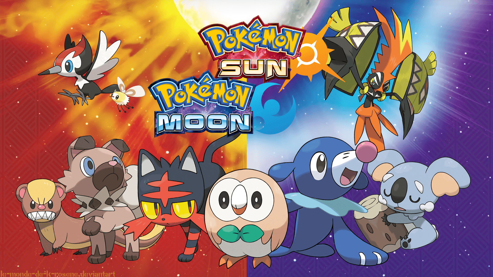
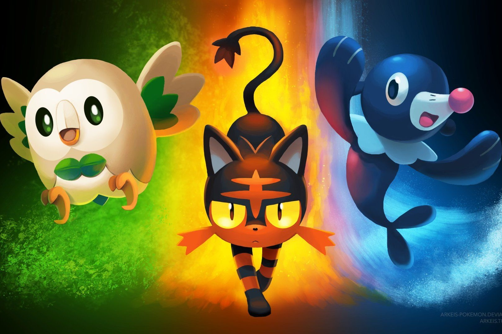

Pokémon Sol y Luna
Si comparamos 'Sol' y 'Luna' con las primeras entregas veremos que no se parecen en nada. Sí bueno, la fórmula de atrapar Pokemons y entrenarlos para pelear por turnos sigue ahí, pero el resto es irreconocible. Alola ya no tiene cuadrículas, ni gimnasios, ni MOs. Lo que tiene, en cambio, es una ambientación única, con formas regionales de pokémon clásicos que se han adaptado a su clima, o con la tradición del recorrido insular que da forma a toda la aventura.
Nueva Variedad de Pokemons
Pokémon Sol y Luna se ambientan en una región totalmente distinta en comparación con lo que habíamos visto hasta ahora. Alola es un ecosistema por sí mismo que no solamente incorpora a las Formas de Alola, variantes del hábitat de la nueva región de Pokémon de la primera generación, sino que incluye hasta 81 criaturas más.
Iniciales De Sol y Luna



Un juego con recompensa
Lo divertido es que si vamos a la web www.rataalada.com nos encontramos con el chat que se encuentra Batman, y nos propone unos cuantos acertijos. La web es también una broma interna de la película puesto que la pista de "el rata alada" es uno de los momentos más divertidos de la película, casi una broma de traductores con la que El pingüino se ríe de Gordon y Batman.

La web tiene varios acertijos que nos pregunta un misterioso personaje que se supone que es el villano de la película, pero sus preguntas son bastante complejas y resolverlas no es tan fácil como parece, y si fallas te intenta poner nervioso, hasta que decide darte una nueva oportunidad y plantea nuevas preguntas.